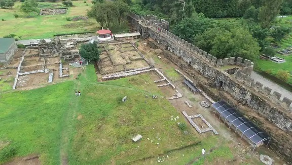

|
GEORGIA
El actual territorio de Georgia fue la antigua Colquis de los griegos, hacia la que Jasón y los Argonautas viajaron desde el puerto de Yolcos en busca del Vellocino de Oro. En época romana la región estaba dividida en una parte occidental llamada Cólquida y otra interna llamada Iberia. Pompeyo conquistó la parte costera de Georgia a la que dieron el nombre de "Provincia de Lazicum" y redujeron a vasallaje el reino de Iberia. En Nokalakevi se localiza la antigua Archaeopolis. Destaca su fortificación tardorromana – bizantina. En Gonio
destaca yacimiento arqueológico del campamento romano de Apsaros y su
museo. El fuerte romano de Apsaros era el mayor del Limes Ponticus, la
frontera romana en el Cáucaso. En el yacimiento se conservan
interesantes vestigios de la época romana y bizantina como son las
murallas y sus torres, los barracones militares, el praetorium, las
termas de los soldados o su sistema de abastecimiento de
agua.
 Foto w0zny en Wikimedia Commons
|